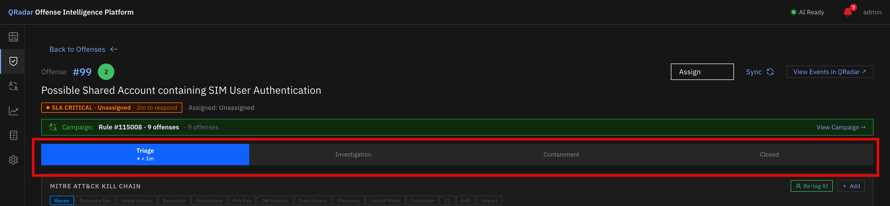
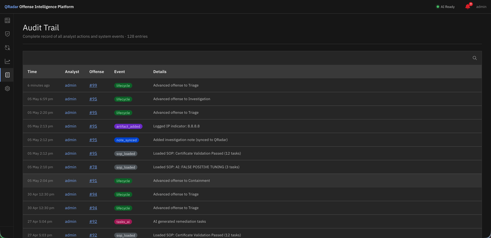

Offense Lifecycle¶
Overview¶
QRadar Offense Intelligence adds a structured lifecycle to every offense, tracking it from initial triage through investigation, containment, and closure. Every stage change, assignment, and closure is recorded in the audit trail with the analyst's name and timestamp.
Lifecycle Stages¶

Lifecycle stepper on Offense Detail — click any stage to advance the offense.| Stage | Meaning |
|---|---|
| Triage | New offense — analyst is determining if it's real and how urgent it is |
| Investigation | Confirmed as real (or needs deeper analysis) — active investigation underway |
| Containment | Root cause identified — containment/remediation actions in progress |
| Closed | Resolved — offense closed with a reason |
Stages are displayed as a stepper at the top of each Offense Detail page. Click any stage to advance or move the offense to that stage.
Assignment¶
Offenses can be assigned to any QRadar analyst. The assigned analyst is shown in the offense overview and in the Analytics workload view.
To assign an offense: 1. Open the offense 2. Click the Assigned To field 3. Select an analyst from the QRadar user list
The assignment is recorded in the audit trail and written back to QRadar.
Closing an Offense¶
To close an offense, advance its lifecycle stage to Closed. You will be prompted to select a closing reason:
| Reason | When to use |
|---|---|
| False Positive | The offense was triggered by benign activity |
| Resolved | The threat was identified and remediated |
| Duplicate | This offense is a duplicate of another |
| No Action Required | The activity is known-good and no action was needed |
| Other | Any other reason |
The closing reason and the closing analyst are recorded in the audit trail and synced to QRadar.
Pending QRadar close¶
When an offense is closed in QRadar Offense Intelligence, a pending_qradar_close flag is set. The Closed Offense Reconciliation scheduler job processes these and closes the offense in QRadar itself, ensuring both systems stay in sync.
Audit Trail¶

Global Audit Trail — every action across all offenses with actor, event type, and timestamp.The audit trail records every action taken on every offense. It is visible:
- Per offense — on the Offense Detail page (scroll to the bottom of any tab)
- Globally — on the Audit Trail page (left navigation)
Each entry includes:
| Field | Description |
|---|---|
| Actor | QRadar username of the analyst who performed the action |
| Event type | Category of action (e.g. lifecycle_change, note_added, task_completed) |
| Message | Human-readable description of what happened |
| Timestamp | UTC timestamp of the action |
Audit trail retention¶
By default, audit trail entries for closed or purged offenses are retained for 90 days before being purged. Open offense audit trails are never purged. Configure the retention period under Settings → System Settings → Audit Trail.
QRadar Synchronisation¶
QRadar Offense Intelligence maintains a local cache of offense data for performance. Changes made in the platform are synced back to QRadar:
| Action | Sync behaviour |
|---|---|
| Add note | Written to QRadar offense notes immediately |
| Assign offense | Written to QRadar assigned user field |
| Close offense | Sets pending_qradar_close flag; processed by Closed Offense Reconciliation job |
| Lifecycle stage change | Stored locally only (QRadar has no native lifecycle stage concept) |
The Closed Offense Reconciliation job also syncs in the other direction — picking up offenses that were closed or made inactive in QRadar and updating their status in the local cache.